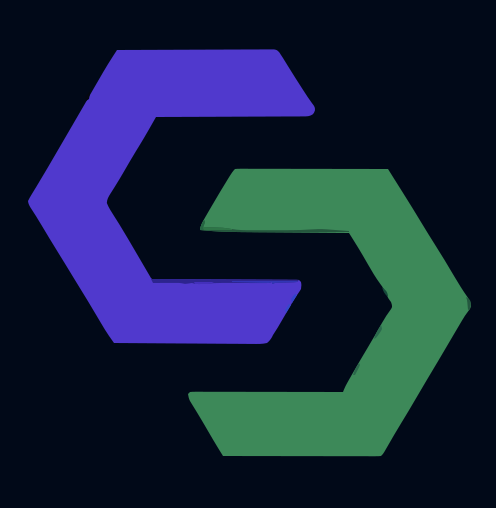
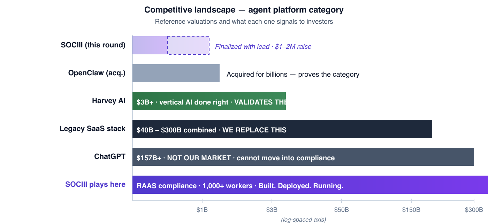
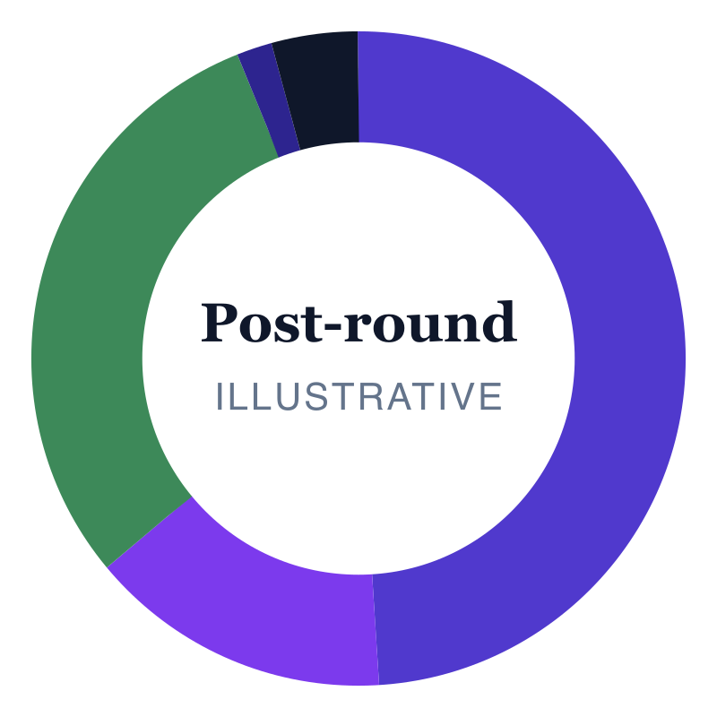
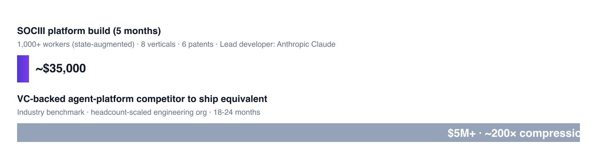
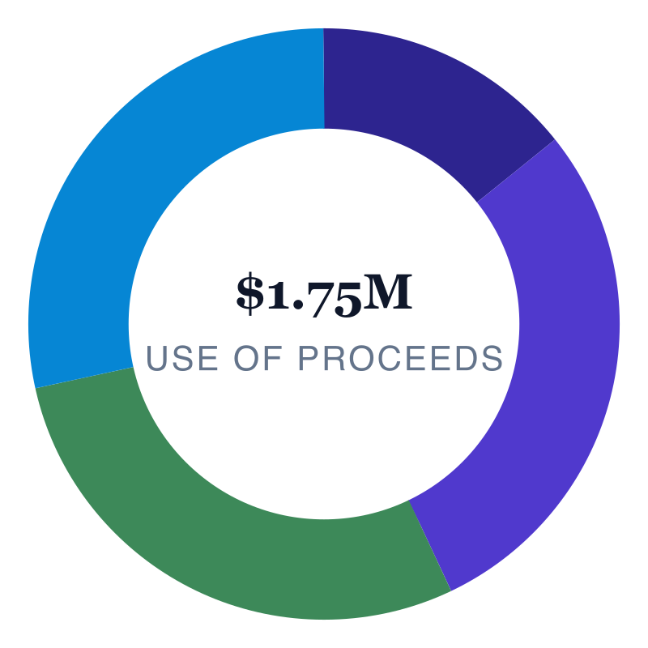

A platform where domain experts build, govern, and earn from AI workers that operate inside their professional rules.
Confidential and proprietary. This memorandum is the confidential and proprietary information of SOCIII, Inc. (the "Company") and is provided solely to the recipient identified on the cover for the purpose of evaluating a potential investment in the Company. By accepting this memorandum, the recipient agrees to maintain its contents in strict confidence, to use it solely for evaluation purposes, and not to reproduce or distribute it without the Company's prior written consent. Recipients are bound by the terms of the executed non-disclosure agreement that governs the disclosure of this material.
No offer, no solicitation. This memorandum does not constitute an offer to sell, or the solicitation of an offer to buy, any securities of the Company in any jurisdiction in which such offer or solicitation is unlawful. Any offer of securities, if made, will be made only by means of a definitive subscription or financing agreement, and only to accredited investors who have established suitability through customary diligence.
Forward-looking statements. This memorandum contains forward-looking statements regarding the Company's strategy, market opportunity, product roadmap, financial projections, and competitive position. These statements reflect current expectations and assumptions that may prove incorrect. Actual results may differ materially. Forward-looking statements include those identified by terms such as "expect," "plan," "intend," "anticipate," "project," "target," "believe," "estimate," and similar expressions. The Company undertakes no obligation to update these statements.
Risk factors. An investment in the Company involves substantial risk, including risks specific to the Company, its industry, regulatory environment, and the macro environment. Prospective investors should review the risk factors in Section VIII before deciding to invest. The risks summarized in this memorandum are not exhaustive, and additional risks not currently known to management or deemed immaterial may also impair the Company's business.
No representation. No representation or warranty, express or implied, is made as to the accuracy or completeness of the information contained in this memorandum. The Company disclaims any obligation to update or revise any statement to reflect events or circumstances after the date of this memorandum. Information from third-party sources is believed to be reliable but has not been independently verified.
Tax and legal considerations. Prospective investors should consult their own tax, legal, accounting, and financial advisors regarding an investment in the Company. The Company and its officers, directors, and advisors are not providing tax, legal, accounting, or financial advice to any prospective investor.
Patents. SOCIII has filed six provisional patent applications with the USPTO covering its core technology. Patent applications are pending and no claims have yet issued. Patent protection is not guaranteed; references to the patent portfolio in this memorandum are descriptions of filings, not assertions of issued claims.
SOCIII, Inc. is a Delaware C-corporation formed May 19, 2026, with its principal office at 1810 E Sahara Avenue, Suite 75942, Las Vegas, NV 89104. EIN 42-2675951. Inquiries: legal@sociii.ai.
SOCIII is a platform where seasoned professionals — the ICU nurse with 20 years of bedside judgment, the master mechanic who can diagnose by sound, the title clerk who knows the county's unwritten rules, the real-estate broker who has seen three market cycles — capture both the rules and the judgment of their work into a digital worker that other practitioners subscribe to. The expert keeps doing the work; the worker scales the knowledge to colleagues, juniors, and the next generation. The mechanism that makes the platform grow is direct economic incentive: every creator earns 75% of every subscription and 20% of the data (token) fees on every worker they author. Domain experts participate because they get paid, not because they are recruited. Every output runs inside a four-tier rules engine and is recorded in an append-only audit trail. SOCIII Inc. is a Delaware C-corporation formed May 19, 2026.
The platform exists because a generation of practitioners is retiring with judgment that no textbook captures. SOCIII gives them a way to preserve it — and earn from it — before it leaves the profession entirely.
A rolling YC-style SAFE round. Target: $5M. Minimum check: $500K — anything less does not meaningfully move the needle. Valuation cap finalized with the lead investor; vertical-AI references (Harvey AI at ~$3B) anchor the upside framing. The founder self-funded the prior twelve months of personal runway; SOCIII is choosing this raise rather than requiring it. The platform is in production, the action loop is confirmed, and institutional clients are onboarding — this is a growth raise, not a survival raise.
Six provisional patent applications filed with USPTO May 24, 2026, covering audit trail, rules engine, Sandbox composition, document control, DTC primitive, and multi-tier RAAS architecture. Conversion deadline May 2027.
Platform has been live since 2024 across aviation Part 135/91, real estate, auto dealer, government, and title & escrow. Reference customers available in each vertical.
Creators earn 75% of every subscription and 20% of the data (token) fees on every worker they author. The nurse, the mechanic, the broker monetizes their judgment for the first time — and SOCIII's growth bottleneck becomes the labor pool of professionals willing to participate, not the labor pool of engineers we can hire.
The operating thesis is best understood as a generational shift in dev-stack economics. At the prior peak — a small team building real-estate dApps in 2022–2024 — the dedicated dev-team burn ran at ~$35,000 per week, the cost of a roughly 25-person engineering organization. Today, the equivalent platform-development burn — inclusive of every AI token, API call, and piece of infrastructure — runs at ~$35,000 every six months. Same dollar, ~50× further reach, because the lead developer is Anthropic Claude rather than a payroll. The mechanism is the platform building the platform: SOCIII runs on its own workers (Alex, Marketing, Accounting, HR, Contacts, Control Center). The next dollar of investor capital extends that ratio rather than resetting it.
SOCIII is an AI agent platform built around a specific bet: the workers that compound in regulated, high-judgment professions will be the ones built by the practitioners themselves, not by AI engineers contracted to study them. A nurse with 20 years of clinical experience can describe her judgment in conversation and the platform composes a worker that captures it. Her colleagues subscribe. She earns 75% of every subscription on a worker she built in an afternoon. The category is not new — Salesforce, Microsoft, and Google have all shipped agent-branded products; NanoClaw raised $12M on enterprise positioning; LangChain and AutoGen have matured from research toolkits to production frameworks — but none of those platforms is structured to recruit and pay the domain experts whose judgment makes the work valuable in the first place.
| Adjacent product | What it does | How SOCIII differs |
|---|---|---|
| ChatGPT / Claude | General-purpose chat. Stateless conversation. | SOCIII records every output in an append-only audit trail. Rules engine validates outputs before delivery. Creators own and earn from the workers they build. |
| LangChain / AutoGen | Frameworks for developers to compose agents from code. | SOCIII is a platform for domain experts. The Sandbox composes workers from natural-language descriptions of work and rules — no coding required. |
| Salesforce Agentforce / Microsoft Copilot | Agents bolted onto existing enterprise platform seats. | SOCIII targets verticals whose data models do not sit naturally in CRM or productivity suites: aviation maintenance, county recording, dispatch. |
| NanoClaw | Enterprise agent platform, sales-led, white-glove implementation. | SOCIII's growth bottleneck is domain experts, not solution architects. See §3.3 on the team-risk inversion. |
| Vertical SaaS incumbents | Software for a specific industry; workflows fixed at vendor design time. | SOCIII covers the long tail of professional work that vertical SaaS cannot economically ship as features. |
SOCIII's architectural identity is described as three things, all of which are running in production today.
Provisional 64/073,700
Every output is event-sourced, append-only, optionally anchored to a public blockchain. State is computed from event history; records are never overwritten. For regulated verticals this is not a feature — it is a deployability prerequisite.
Provisional 64/073,708
Tier 0 Platform Safety — universal rules, immutable. Tier 1 Industry Regulations — FAR/AIM, NCLEX, state RE law, HIPAA, Reg D, compiled once. Tier 2 Operator Policies — creator-editable for the deployment. Tier 3 User Preferences — subscriber-editable within all tiers above. The model proposes; the rules engine validates; only validated outputs reach the user.
Provisional 64/073,704
The Sandbox surface where a domain expert describes their work in plain conversation and the platform composes a worker around their judgment. The expert keeps their day job; the worker scales their judgment to colleagues, juniors, and the next generation — and pays the expert on every subscription. Accessibility to the people who know the work is the long-term moat.
The agent platform category is forming, so market sizing is more useful as framing than precision. Three reference layers:
| Layer | Annual size | SOCIII relevance |
|---|---|---|
| Vertical SaaS — aviation, real estate, auto dealer, gov, healthcare | ~$200B | Long-tail workflow & compliance layer SaaS can't ship |
| Workflow-and-compliance addressable layer | $30B – $40B | Direct addressable market |
| Consumer & prosumer AI | $50B – $100B | Slice where users have monetizable professional knowledge |
| Professional-knowledge prosumer slice | $5B – $10B | Sandbox-side addressable |
| Platform marketplace ceiling (long-term) | $1T+ (App Store reference) | Upper bound only; not modeled in the round case |

The cleanest single frame for the difference between SOCIII and a sales-led agent platform.
Grows by hiring solution architects. Each new customer requires a custom implementation. Team size grows approximately linearly with customer count. Margins compress as the services-to-software ratio shifts toward services. Growth ceiling is set by recruitable solution-architect labor.
Grows by recruiting domain experts to build their own workers. New verticals do not require new engineering hires. Team-size growth scales with platform and ops needs, not implementation work. Growth ceiling is set by the labor pool of professionals willing to monetize their knowledge — a fundamentally larger number.
Four layers, listed in descending order of how quickly they can be replicated by a well-funded entrant.
Six provisional applications filed via USPTO EFS-Web on May 24, 2026. Each application cites a 2023 patent (18/398,973, now public) and a December 2024 logbook as the foundation for a continuous invention thread. The strategy is prior-art-as-priority: new claims protect system-level composition that builds on the cited foundation, not primitives a competitor could independently invent. Conversion deadline is May 2027.
| Application | Coverage | Relevance |
|---|---|---|
| 64/073,693 | Knowledge Capture — pipeline by which founder + AI conversations become worker rules and platform knowledge | Sandbox upstream + worker authoring pipeline |
| 64/073,700 | Audit Trail — append-only event store with optional public-chain anchoring | Compliance moat for regulated verticals |
| 64/073,704 | Build-Without-Code — the Sandbox surface and worker-composition pipeline | Accessibility moat |
| 64/073,705 | Escrow Locker — document control with cryptographic acknowledgment, version pinning, distribution tracking | Document control as a platform primitive |
| 64/073,706 | Title & Property Assurance — Digital Title Certificate (DTC), parent-child certificate composition | Real estate & title vertical; brand mark |
| 64/073,708 | RAAS Multi-Tier — rules engine's three-tier architecture and runtime validation pipeline | Rules-engine moat |
The rules engine itself is an engineering primitive a competitor could replicate in a quarter. The corpus is not. Two years of professional-rule encoding across more than 200 verticals, each rule written and reviewed by someone who actually knows the rule, is the layer that does not show up in a feature comparison and does not compress on a roadmap.
SOCIII has been in production since 2024 across aviation Part 135/91, real estate, auto dealer, government (DMV, recording, permitting, inspections), healthcare and education, and finance and compliance verticals. First institutional enterprise clients are onboarding in H2 2026. A buyer doing a reference call to a Part 135 operator running a SOCIII dispatch worker — or a nursing educator using the student evaluation worker — gets a different signal than a buyer doing a demo with a platform still in pilot.
Every connector that runs through SOCIII runs through the rules engine. Gmail connected to SOCIII is not the same as Gmail connected to a raw Zapier zap — every action Alex takes via Gmail is validated against the same rule set that governs the AI worker. As of June 2026, Google Calendar, Gmail, Google Drive, YouTube, and Apollo.io are live. Microsoft OneDrive, Outlook, Shopify, Salesforce, and QuickBooks are roadmapped. SOCIII also operates as a Model Context Protocol (MCP) server, allowing Claude and other MCP-compatible assistants to invoke workers and access the Vault under the rules engine. The integration moat compounds with each connector: more connectors → more surface area for workers → more value per worker → more creator incentive → more integrations needed. The trajectory is toward 100+ integrations by end of 2026.
On June 27, 2026, the following sequence was executed in a single Alex conversation, without switching apps or copy-pasting:
This is the platform thesis demonstrated, not described: Alex reads real systems, proposes governed actions, waits for explicit approval, and executes. The approval gate is not a UX convention — it is the moat. It is what makes SOCIII deployable in contexts where a runaway AI agent is a liability, not a feature.
SOCIII runs on SOCIII. Eight humans set strategy. The platform's own workers run the company: Alex (Chief of Staff), Marketing, Accounting, HR, Contacts, Fundraise, Control Center. That is the dogfood proof and the structural reason the team scales without friction.
| Name | Background | Scope at SOCIII |
|---|---|---|
| Sean Combs Founder & CEO |
Aviation · RE Development · Technology spine. Active pilot. Built the platform 2024–present; self-funded prior twelve months. | Platform, product, engineering, operations. Runs Alex (CoS), Marketing, Accounting, HR, Contacts, Control Center workers. |
| Kent Redwine Cofounder |
Bank of America · Thomas Weisel · capital markets. | Fundraising & investor reporting. Operates the Fundraise worker, IR, cap table, Data Room. 15% milestone-vested + 5% success fee on capital sourced. |
| Scott Eschelman Advisor |
BuildSF · California mixed-use developer. | Development & security. Claude Code dev workers + security scanning. ~$5K/mo replaces a 25-person dev shop. |
| Ruthie Clearwater, PhD Creator community lead |
Nationally ranked nursing program · EMS flight nurse. | Onboarding, support, payouts, marketplace ops. The professional-community distribution model exemplified. |
| Elise van der Bel | EU ecommerce · Digital Product Passport regulation. | Sandbox — no-code worker authoring. Domain experts build workers by conversation. |
| Eric Altshuler | Naval Aviator — Top Gun graduate · FedEx 777 Pilot. | Terminal & open source. Engineers pair-program with AI; OSS contributions. Aviation vertical sounding board. |
| Kim Bennett | PropertyRadar · real estate data pioneer. | Patent & IP. Provisional drafting, prior-art search, claim management. |
| Robert Rosenberg | Oracle · infrastructure · legal · compliance. | Plus on-demand specialty workers authored as the day requires. |
| Alex AI Chief of Staff |
Platform-entitled AI worker present in every SOCIII user account on signup. | Customer-facing IR, sales, support across all surfaces. Not headcount. |
The deliberate non-hire is solution architects. SOCIII grows by recruiting domain experts to build their own workers, not by hiring a services org. First-six-months hires:
| Role | Count | Profile |
|---|---|---|
| Senior generalist engineer | 2 – 3 | Cross-stack; rules engine, audit layer, worker-composition pipeline. |
| Product designer | 1 | Strong consumer-product instincts. Accessibility for non-engineer domain experts is the design constraint. |
| Solution architects | 0 | Intentionally zero. The team-risk inversion is the structural commitment. |
Day 0 IP assignment. All pre-formation IP — the platform, the worker library, the patent family, the RAAS corpus, the DTC audit layer — was assigned to SOCIII Inc. at formation. Every contributor with repo or data access has signed an Invention Assignment Agreement (IAA) before access. Institutional capital can wire same-day; there is no IP-cleanup tail.
Sole-manager governance. Sean is the sole founder structurally; the company operates under sole-manager governance through the Series A trigger ($150K MRR). Kent operates as cofounder externally with milestone-vested equity scoped to fundraising and BD. Advisors hold equity but not voting control. The structural decision is engineered for fast institutional fundraising and clean exit optionality.
HOM DAO's blockchain heritage evolved into the platform's Digital Title Certificate (DTC) audit layer. The same chain-anchor primitives that powered distributed real-estate dApp ownership now provide provable, traceable, defensible audit trails for every worker output. The technical inheritance is direct; the governance inheritance is exactly inverted.
Illustrative for the planning round size. Exact percentages depend on round size and are specified in the Data Room model. The founder allocation post-round lands between approximately 47% (worst case) and 60%+ (realistic case).

Approximately $615,000 of documented exposure across roughly eight stakeholders from three prior ventures (HOM DAO, RealEx, TitleApp LLC). The resolution honors that exposure with basis-point warrant grants tiered to how many ventures the creditor participated in. The total cap-table footprint is approximately 1.7%, absorbed entirely from the founder's allocation, not from investor dilution.
The platform underlying SOCIII was built across two prior structural eras and one current one. The shift in operating cost between them is the load-bearing argument of this raise.
| Era | Platform-dev burn | Mechanism |
|---|---|---|
| Prior-generation dApp build (2022–2024) | ~$35,000 / week | Dedicated dev team (~25 engineers) building real-estate dApps the way that generation required. Burned at the rate of a typical seed-stage engineering organization. |
| Founder bootstrap window (2024–2026) | ~$35,615 over 3 years | Productized title search inside a Delaware LLC. ~$1,000/month average. The worker platform that emerged from this work became the real product. TitleApp LLC is now winding down; platform IP and creditor positions paper into SOCIII Inc. |
| Current SOCIII platform-dev pace | ~$35,000 every 6 months | Humans plus digital workers. Lead developer: Anthropic Claude. All-inclusive figure — AI tokens, API costs, infrastructure, tooling. Roughly $5,800/month doing the work of a ~25-person dev shop. |
| Item | Amount | Treatment |
|---|---|---|
| Documented prior-venture creditor exposure (3 ventures) | ~$615,000 | Papered into SOCIII via creditor warrants (§6.2); absorbed from founder allocation. |
| Known TitleApp LLC liabilities at wind-down | ~$228,000 | Subset of the $615K above; resolution scheduled through wind-down packet. |
| SOCIII Inc. opening balance (shareholder loan from founder) | $1,000 | Stripe Atlas formation; Stripe Treasury operating account. |

The interpretation that matters: the founding team has already demonstrated that it can build a production AI platform across five verticals on a budget that would not fund a single senior engineer hire at most agent-platform competitors. Capital efficiency is the most expensive thing to teach a founding team; SOCIII does not need to be taught.
The platform monetizes through five independent revenue streams, three of which run at near-100% gross margin. Which stream dominates over the next two to three years is genuinely unknowable; it depends on which user behavior compounds fastest and how mass adoption unfolds. The structural point is that the platform does not depend on a single answer.
| Stream | Pricing | Gross margin | Creator share | Scales with |
|---|---|---|---|---|
| Subscription | $29 – $99/mo | ~75% | 75% | Creator + subscriber growth |
| Data Credits | $0.02/credit | ~90% | 0% | Usage; Alex upsells bulk top-ups |
| API Pass-Through | 2× cost floor | 50 – 85% | 75% | Data richness per session |
| Audit Trail | $0.005/record | ~95% | 0% | Regulated-vertical sessions |
| Creator License | $49/yr | ~100% | 0% | Total creator population |
First $250K clears inherited debt obligations. Remaining $1.5M funds commercial launch, community activation, and 18-month runway. Profitable at month 24 with or without this check.

| Allocation | Amount | What it funds |
|---|---|---|
| Debt service | $250K | Honors outstanding pre-formation obligations: Robert Rosenberg ($100K), Chris Dunn ($15K), HOM DAO inherited accounts payable (~$100K), and remaining creditor positions. Clears the deck before commercial launch. |
| Trade conferences & industry presence | $500K | Ruthie at NurseCon. Pilots at NBAA. Dealers at NADA. The rooms where professionals gather. We send domain experts, not salespeople. |
| Professional network activation | $500K | Identify and activate 200+ domain experts across all verticals — The Nurse, the pilot, the dealer, the inspector. Each one has a trusted community. Includes connector integrations and specialized vertical API access. |
| 18-month runway + operations | $500K | $25K/mo overhead × 18 months = $450K. Balance covers legal, accounting, and cap-table maintenance. We build with AI, not headcount. |
| Total (base case within $1–2M raise) | $1.75M | Profitable at month 24 in the modeled base case. |
The mass-adoption curve for vertical AI agent platforms is genuinely unknowable at this stage. The model below does not predict which path SOCIII follows; it answers the question if mass adoption looks like X, then what does the math say. Three scenarios. One model. All scenarios use a $99/mo blended base subscription and $25K/mo fixed overhead. Scenarios differ only on monthly growth rate and churn.
| Assumption | Worst | Base | Best |
|---|---|---|---|
| Monthly growth rate (new subscribers) | 5% | 10% | 20% |
| Monthly churn rate | 5% | 2% | 0.5% |
| Month 1 new subscribers | 3 | 10 | 25 |
| % subscribers who are "active users" | 40% | 65% | 80% |
| Months to first 100 subscribers | 18 | 9 | 5 |
| Output | Worst | Base | Best |
|---|---|---|---|
| Month 12 | |||
| Total subscribers | 47 | 213 | 987 |
| MRR | $4.9K | $25.1K | $151.8K ✓ |
| Month 24 | |||
| Total subscribers | 133 | 872 | 9,772 |
| MRR | $13.8K | $102.7K | $1.5M |
| Profitability | Not yet | ✓ Profitable | ✓ Profitable |
| Month 36 | |||
| Total subscribers | 278 | 2,938 | 88,108 |
| MRR | $28.8K | $346.1K | $13.5M |
| ARR run-rate | $346K | $4.2M | $162.6M |
| LTV:CAC ratio | 4.0 | 38.9 | 1,550 |
| Series A trigger ($150K MRR) | Month 36 | Month 18 | Month 10 |
Illustrative model only — not a projection, promise, or forward-looking statement. The model was built around a $5M reference raise to test cash-runway sensitivity; the current $1–2M raise (Base case use-of-proceeds: $1.75M) reaches Series A trigger in the Base scenario at Month 18 with operating cash to spare, and survives the Worst scenario through Month 36. The complete model with monthly cash trajectories, unit economics, sensitivity analysis, and per-revenue-stream attribution is in the Data Room. See Important Notices on the back cover.
Honest enumeration of what could go wrong, ordered by probability-weighted impact.
| Risk | What it means | Mitigation in place |
|---|---|---|
| LLM cost compression stalls | If inference costs rise or stop compressing, the unit-economics assumption inverts and runway shortens. | Model-agnostic architecture: the rules engine validates output regardless of which model produced it. We can move providers in a quarter. |
| Well-funded incumbent ships competing platform | Notion, Airtable, or a foundation-model lab decides to target domain experts directly. Twenty-times-our-funding gap is real. | Patent priority date, RAAS corpus, two-year head start in production. Forces them to license, replicate the corpus, or differentiate elsewhere. |
| Creator flywheel does not compound | Sandbox-built workers don't find buyers. Platform reduces to vertical SaaS with audit trails. | Enterprise pipeline (Kent's outbound) produces revenue independent of creator funnel. Downside case is still a viable company; upside requires the flywheel. |
| Regulatory exposure on specific RAAS modules | A worker proposing maintenance intervals or disclosure language is cited as unlicensed practice. | User-counsel attestation pattern: at worker activation the user's counsel attests outputs are reviewed before action. Counsel-reviewed agreements. |
| Patent prosecution narrows claims | Conversion to non-provisional in May 2027 surfaces prior art we did not find. Some claim breadth is lost. | Counsel assessment: the core composition claims are defensible; the breadth is the variable. Prior-art-as-priority strategy was designed for this. |
| Founder bandwidth and key-person risk | Founder is an active medevac and airline pilot with a regular flight schedule and active type ratings; operates the company at small team size. Aviation has inherent operational risk separate from business risk. | AI workers absorb operational load by design — Alex, Marketing, Accounting, HR, Contacts, and Control Center run the company through Sean's flying schedule. Kent's bounded scope on fundraising and BD. Planned engineering hires post-raise. Key-person insurance under evaluation. |
Rolling SAFE. Target: $5M. Minimum check: $500K. Valuation cap finalized with the lead investor; comp-set anchoring described in §3.2. 30% equity pool reserved for advisors, future hires, and the creator path. Sole-manager governance through the Series A trigger ($150K MRR / ~$1.8M ARR). No discount layered on the cap. No MFN-plus terms. Designed to be readable and signable in fifteen minutes.
SAFEs are signed and counted on a rolling basis as investors decide; the company calls the close when the cap fills or when strategic concentration is achieved. The $5M target funds a 24-month runway, trade-conference presence, and creator-network activation at full speed. A $500K minimum check is set because smaller checks do not materially move any of these levers. The platform is in production — this is a growth raise, not a survival raise.
Reg D 506(b). Offered to accredited investors with pre-existing relationships to the founders. Investors complete Stripe Identity verification (~3 minutes; SOCIII covers the fee) and provide accreditation representations before SAFE execution. Verification flow is integrated into the IR Worker on the SOCIII platform. Counsel has reviewed the SAFE template and the verification flow. No general solicitation; this memorandum is sent in confidence to a specific named investor.
| Step | Action | Time |
|---|---|---|
| 1 | Platform sends a magic link to your email. | — |
| 2 | You click the magic link; IR flow opens on SOCIII. | 10 seconds |
| 3 | Stripe Identity verification (SOCIII covers fee). | ~3 minutes |
| 4 | Accredited-investor verification. | ~3 minutes |
| 5 | Review the YC-style SAFE in Dropbox Sign. | ~5 minutes |
| 6 | Sign. | ~30 seconds |
| 7 | Executed SAFE files in your SOCIII Vault; confirmation email; wire instructions in the SAFE. | Immediate |
| Total end-to-end including SAFE reading | ~15 minutes | |
Commitments above $250K warrant direct involvement on terms; Sean or Kent runs that conversation. Introductions to co-investors are handled by sending the prospect's name and email to Sean or Kent. Syndicates and SPVs can be structured; a fifteen-minute scoping call is the starting point.
Request Data Room access for the working financial model and the underlying legal documents. Schedule office hours with Sean or Kent for substantive conversation. Start the IR flow at any time — the magic link works whether you've read the Data Room first or not.
Disclaimer. This document is provided for informational purposes only to qualified investors evaluating the SOCIII pre-seed round. It does not constitute an offer to sell or a solicitation to buy any securities. Securities are offered only by definitive subscription documents executed inside the SOCIII IR flow, and only to investors who satisfy Reg D 506(c) accreditation. Forward-looking statements are subject to risks and uncertainties. Specific numbers (cap-table percentages, round terms, valuation cap, application IDs) are sourced from the canonical company records and the Data Room model; this memorandum renders them in prose for diligence convenience. Where this document conflicts with the Data Room, the Data Room controls.
SOCIII, Inc. · 1810 E Sahara Ave STE 75942, Las Vegas, NV 89104 · EIN 42-2675951 · Delaware file 10629231
Memorandum issued May 25, 2026 · Strictly Confidential